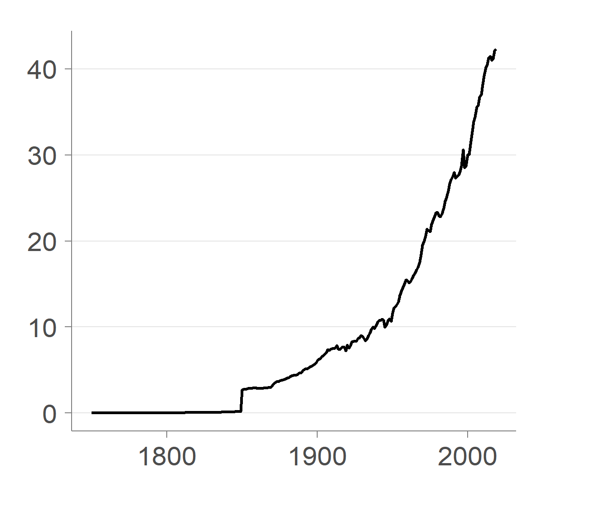
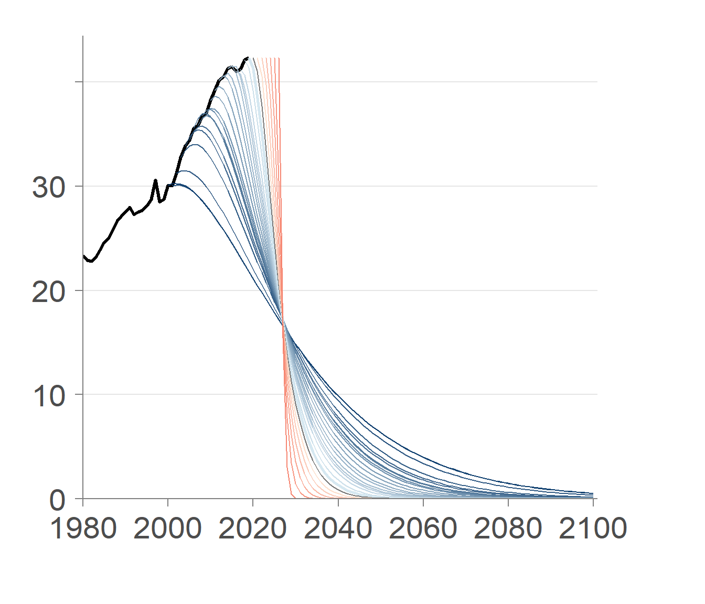
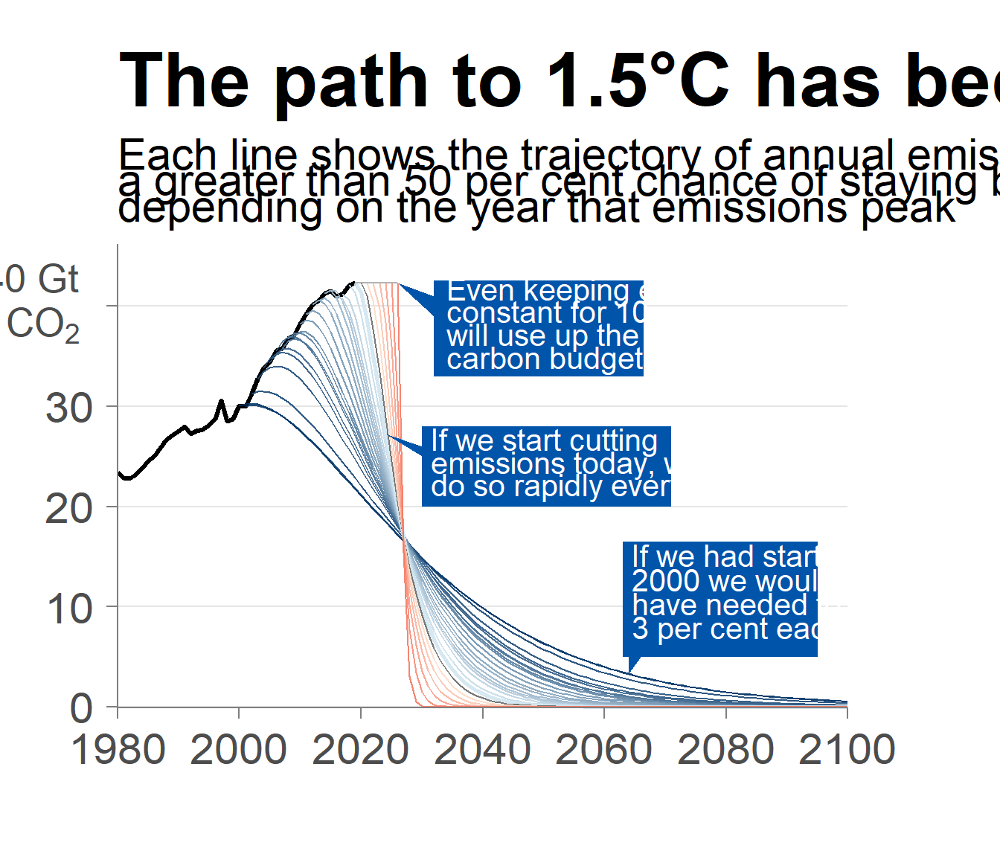
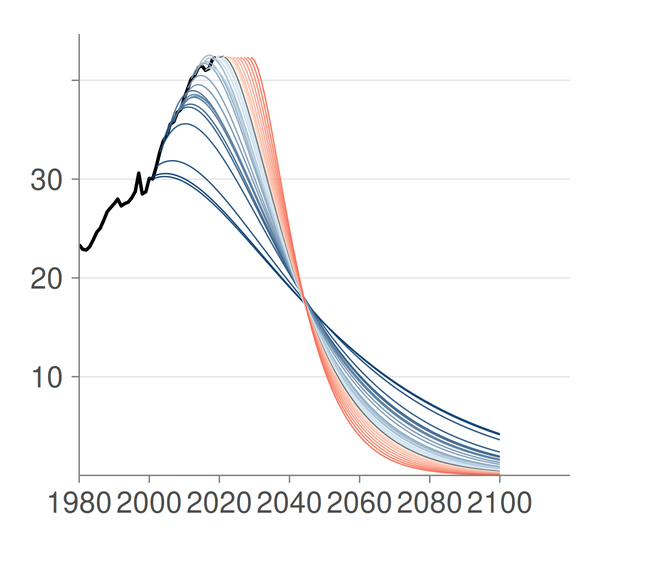
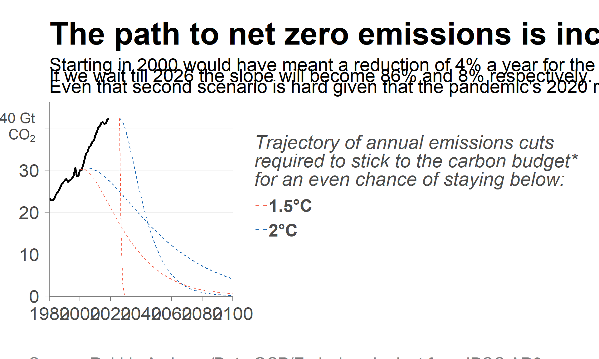

Introduction: The world’s 1.5°C climate goal is slipping out of reach
The 1.5°C global warming limit was established as a key goal within the 2015 Paris Agreement, an international treaty adopted at the UN Climate Change Conference (COP21) in Paris, France. The agreement aimed to hold temperature increases “well below 2°C above pre-industrial levels and pursue efforts to limit the temperature increase to 1.5°C”.
This project explores the visualization of this critical threshold, analyzing historical data and mitigation curves to understand the urgency of the situation.

This graph was made originally by Robbie Andrew, a senior researcher at the Center for International Climate Research (CICERO). It plots \(CO_2\) emissions in Gigatonnes of \(CO_2\) between the yeas of 1750 and 2019 mapping the year to the x-axis and \(CO_2\) emissions to the y-axis. One Gigatonne of Carbon Dioxide equals it’s 1 trillion kilograms. The source specifies that the sources of the \(CO_2\) are fossil fuels and land-use change.
It also plots mitigation lines. These are mathematical trajectories that visualize the required annual reduction in global emissions to stay within a specific carbon budget.
Before we start…
Libraries
Load the data
The data used to replicate this graph was found in the personal website of Robbie Andrew. It is publicly accessible online although it’s slightly outdated
The dataset are downloadable here: 1.5C, 2C.
We use a function to get the data in the correct long format:
# Define a function to process the files
process_emissions_data <- function(filename) {
read_csv(filename) |>
pivot_longer(
cols = -Year,
names_to = "Scenario",
values_to = "Emissions"
) |>
filter(!is.na(Emissions)) |>
mutate(
StartYear = as.numeric(Scenario),
Type = ifelse(Scenario == "Historical", "History", "Mitigation")
)
}
# Load both datasets in one go
df_plot <- process_emissions_data("mitigation_curves_1.5C_191203_data.csv")
df_plot_2C <- process_emissions_data("mitigation_curves_2.0C_191203_data.CSV")Replicating the graph
Theme
Before building the plot, we define the visual theme. This ensures consistency across the visualization, removing unnecessary background elements to focus on the data.
my_theme <- function() {
theme_minimal(base_family = "sans", base_size = 14) +
theme(
# MAIN LAYOUT & MARGINS --------------------------------------------------------
# Adds whitespace on all sides
plot.margin = margin(t = 0.9, r = 2.7, b = 1.5, l = 0.8, unit = "cm"),
# Backgrounds
plot.background = element_rect(fill = "white", color = NA),
panel.background = element_rect(fill = "white", color = NA),
# Grid lines
panel.grid.major.y = element_line(color = "grey90", size = 0.5),
panel.grid.minor.y = element_blank(),
panel.grid.major.x = element_blank(),
panel.grid.minor.x = element_blank(),
# Axes
axis.line.x = element_line(color = "grey50", size = 0.5),
axis.line.y = element_line(color = "grey50", size = 0.5),
axis.ticks = element_line(color = "grey50", size = 0.5),
axis.ticks.length = unit(0.2, "cm"),
# Text & Labels
text = element_text(color = "grey30"),
axis.text = element_text(color = "grey30", size = 22),
axis.text.y = element_text(vjust = 0.5),
axis.title = element_blank(),
# Legend
legend.position = "none",
# TITLE STYLING
plot.title = element_text(
face = "bold",
size = 38, # Large font (approx 18-20pt)
color = "black", #pure black
hjust = 0,
margin = margin(b = 8) # Add small space between Title and Subtitle
),
# SUBTITLE STYLING
plot.subtitle = element_text(
face = "plain", # Regular weight
size = 22, # Smaller than title, legible
color = "black", # Dark text
lineheight = 0.5, # specific spacing between the subtitle lines
),
)
}Historical data
First we plot the basic line that is plotted in both sides of the graph. This black line represents historical emissions.
historical<- ggplot() +
# FIX: Filter the long data for "History" and use the 'Emissions' column
geom_line(data = df_plot |> filter(Type == "History"),
aes(x = Year, y = Emissions),
color = "black", linewidth = 1.2) + # Thickest linewidth
my_theme()
historical
Left plot
Mitigation curves
The data for this graph was made in 2019. So they focus with a grey line the mitigation required to stick to the carbon budget for that year. For mitigation lines before that year, the lines appear blue, for mitigation lines after, they appear red.
We create a code that can be used to automatically label the data for Past, Current and Future lines to color them later
To color this lines we create a palette with as many blue colors needed (dark to light) and as many red colors (light to dark). This creates a palette for the left plot but not the right since they have a different number of mitigation lines.
# Counts how many years exist in each period
years_past <- n_distinct(df_plot$StartYear[df_plot$TimePeriod == "Past"])
years_future <- n_distinct(df_plot$StartYear[df_plot$TimePeriod == "Future"])
# Generate the gradients dynamically using those counts
blues_gradient <- colorRampPalette(c("#003366", "#d1e5f0"))(years_past)
reds_gradient <- colorRampPalette(c("#fddbc7", "#f3513a"))(years_future)
grey_highlight <- "#6a6a6a"
# Stitch them together
final_palette <- c(blues_gradient, grey_highlight, reds_gradient)Finally we plot the lines along with the proper colors and sizes:
p <- historical +
# MITIGATION LINES-----------------------------------------------------------------
geom_line(
data = df_plot |> filter(Type == "Mitigation"),
aes(
x = Year,
y = Emissions,
group = StartYear,
color = as.factor(StartYear),
size = IsFocusYear
),
alpha = 0.9
)+
# COLORS ---------------------------------------------------------------------------
scale_color_manual(values = final_palette) +
# LINE WIDTHS ----------------------------------------------------------------------
# Maps the "IsFocusYear" (TRUE/FALSE) to specific thicknesses
scale_size_manual(
values = c("FALSE" = 0.5, "TRUE" = 1), # False=Others, True=2019
guide = "none" # This hides the legend for line thickness
) +
# SCALES --------------------------------------------------------------------------
scale_x_continuous(
breaks = c(1980, 2000, 2020, 2040, 2060, 2080, 2100),
limits = c(1980, 2101),
expand = expansion(0)
) +
scale_y_continuous(
breaks = c(0, 10, 20, 30, 40),
labels = c("0", "10", "20", "30", ""),
expand = expansion(mult = c(0, 0.05))
)
p
Annotations
First create the poligons (the blue boxes). Then I add the white text on top of them and the rest of the annotations.
# --- we define the Polygon Shape counter-clockwise order to ensure the shape isn't twisted.
#Tip -> Wedge Top -> Box Top Left -> Box Top Right ->
#->Box Bottom Right -> Box Bottom Left -> Wedge Bottom
poly_df <- data.frame(
#tip wedt topl topr botr botl wedb
x = c( 2026, 2032, 2032, 2066.5,2066.5, 2032, 2032),
y = c(42.33, 41, 42.55, 42.55, 33, 33, 39)
)
poly_df2 <- data.frame(
#tip wedt topl topr botr botl wedb
x = c( 2024, 2030, 2030, 2071, 2071, 2030, 2030),
y = c(27.22, 26, 28, 28, 20, 20, 25)
)
poly_df3 <- data.frame(
#tip wedb botr topr topl botl wedt
x = c( 2064, 2066, 2095, 2095, 2063, 2063, 2064),
y = c(3.301, 5, 5, 16.5, 16.5, 5, 5)
)p <- p +
# TITTLE AND SUBTTILES----------------------------------------------------------------
labs(
title = "The path to 1.5°C has become a cliff edge...",
subtitle = "Each line shows the trajectory of annual emissions cuts required for\na greater than 50 per cent chance of staying below 1.5°C,\ndepending on the year that emissions peak"
) +
# GIGATONS OF CO2--------------------------------------------------------------------
annotate("text", x = 1980, y = 40, label = "40 Gt", hjust = 1.4, vjust = -0.5, size=7, color = "grey30") +
annotate("text", x = 1980, y = 40, label = "CO[2]", parse = TRUE, hjust = 1.5, vjust = 1, size=7, color = "grey30") +
# SOURCE-----------------------------------------------------------------------------
annotate("text", x = 1980, y = 0, label = "Source: Robbie Andrews/Data:GCP/Emissions budget from IPCC AR6", hjust = 0.04, vjust = 6, color = "grey50", size=7.5) +
coord_cartesian(xlim = c(1980, 2100), ylim = c(-0.1, 44), clip = "off") +
# POLIGONS-----------------------------------------------------------------------------
# The Faint Grey Line that connects 2019 (graph peak) to 2026 (wedge tip)
annotate("segment",x = 2019, xend = 2026,y = 42.33, yend = 42.33,
color = "grey70",size = 0.5) +
geom_polygon(data = poly_df,aes(x = x, y = y),fill = "#0055AA",color = NA) +
geom_polygon(data = poly_df2,aes(x = x, y = y),fill = "#0055AA",color = NA) +
geom_polygon(data = poly_df3,aes(x = x, y = y),fill = "#0055AA",color = NA) +
# WHITE TEXT 1 ------------------------------------------------------------------------
annotate("text",x = 2034,y = 40.6,label = "Even keeping emissions",hjust = 0,vjust = 0, color = "white",size = 5.45,lineheight = 1.0) +
annotate("text",x = 2034,y = 38.4,label = "constant for 10 years",hjust = 0,vjust = 0, color = "white",size = 5.45,lineheight = 1.0) +
annotate("text",x = 2034,y = 36.1,label = "will use up the remaining",hjust = 0,vjust = 0, color = "white",size = 5.45,lineheight = 1.0) +
annotate("text",x = 2034,y = 33.8,label = "carbon budget",hjust = 0,vjust = 0,color = "white",size = 5.45,lineheight = 1.0)+
# WHITE TEXT 2 ------------------------------------------------------------------------
annotate("text",x = 2031.5,y = 25.6,label = "If we start cutting",hjust = 0,vjust = 0,color = "white",size = 5.45,lineheight = 1.0) +
annotate("text",x = 2031.5,y = 23.3,label = "emissions today, we must",hjust = 0,vjust = 0,color = "white",size = 5.45,lineheight = 1.0) +
annotate("text",x = 2031.5,y = 21.1,label = "do so rapidly every year",hjust = 0,vjust = 0,color = "white",size = 5.45,lineheight = 1.0)+
# WHITE TEXT 3 ------------------------------------------------------------------------
annotate("text",x = 2064.5,y = 14,label = "If we had started in",hjust = 0,vjust = 0,color = "white",size = 5.45,lineheight = 1.0) +
annotate("text",x = 2064.5,y = 11.6,label = "2000 we would only",hjust = 0,vjust = 0,color = "white",size = 5.45,lineheight = 1.0) +
annotate("text",x = 2064.5,y = 9.2,label = "have needed to cut by",hjust = 0,vjust = 0,color = "white",size = 5.45,lineheight = 1.0) +
annotate("text",x = 2064.5,y = 6.8,label = "3 per cent each year",hjust = 0,vjust = 0,color = "white",size = 5.45,lineheight = 1.0)
p
Right plot
We follow the same framework as with the right plot
Mitigation curves
# Create helper columns so the plot code reads like English
df_plot_2C <- df_plot_2C |>
mutate(
# Create a clear category for coloring logic
TimePeriod = case_when(
StartYear < focus_year ~ "Past",
StartYear == focus_year ~ "Current",
StartYear > focus_year ~ "Future"
),
# Create a logical column for line thickness
IsFocusYear = (StartYear == focus_year) # Focus year is the same on both plots
)# 1. Count exactly how many years exist in each period
# This makes the code robust: if you add more data, the colors update automatically.
years_past_2C <- n_distinct(df_plot_2C$StartYear[df_plot_2C$TimePeriod == "Past"])
years_future_2C <- n_distinct(df_plot_2C$StartYear[df_plot_2C$TimePeriod == "Future"])
# 2. Generate the gradients dynamically using those counts
blues_gradient_2C <- colorRampPalette(c("#003366", "#d1e5f0"))(years_past_2C)
reds_gradient_2C <- colorRampPalette(c("#fddbc7", "#f3513a"))(years_future_2C)
grey_highlight_2C <- "#6a6a6a"
# 3. Stitch them together
final_palette_2C <- c(blues_gradient_2C, grey_highlight_2C, reds_gradient_2C)p_right <- historical +
# MITIGATION LINES-----------------------------------------------------------------
geom_line(
data = df_plot_2C |> filter(Type == "Mitigation"),
aes(x = Year,
y = Emissions,
group = StartYear,
color = as.factor(StartYear),
size = (StartYear == focus_year)
),
alpha = 0.9
) +
my_theme() +
# COLORS ---------------------------------------------------------------------------
scale_color_manual(values = final_palette_2C) +
# LINE WIDTHS ----------------------------------------------------------------------
# Maps the "IsFocusYear" (TRUE/FALSE) to specific thicknesses
scale_size_manual(
values = c("FALSE" = 0.5, "TRUE" = 1), # False=Others, True=2019
guide = "none" # This hides the legend for line thickness
) +
# SCALES --------------------------------------------------------------------------
scale_x_continuous(
breaks = c(1980, 2000, 2020, 2040, 2060, 2080, 2100),
limits = c(1980, 2120),
expand = expansion(0)) +
scale_y_continuous(
breaks = c(0,10,20,30,40),
labels = c("0", "10", "20", "30", ""),
expand = expansion(mult = c(0, 0.05)))
p_right
Annotations
poly_df4 <- data.frame(
#tip wedt topl topr botr botl wedb
x = c( 2029, 2035, 2035, 2074.5, 2074.5, 2035, 2035),
y = c(42.33, 41, 42.55, 42.55, 33, 33, 39)
)
poly_df5 <- data.frame(
#tip wedt topl topr botr botl wedb
x = c( 2031, 2039, 2039, 2081.5, 2081.5, 2039, 2039),
y = c( 32.3, 31, 32.3, 32.3, 24, 24, 30)
)
poly_df6 <- data.frame(
#tip wedb botr topr topl botl wedt
x = c( 2067, 2079, 2110, 2110, 2075, 2075, 2077),
y = c(10.13, 14, 14, 23.3, 23.3, 14, 14)
)p_right<-p_right+
# TITTLE AND SUBTTILES----------------------------------------------------------------
labs(
title = "...but 2°C remains achievable",
subtitle = "Each line shows the trajectory of annual emissions cuts required for\na greater than 50 per cent chance of staying below 2°C, depending\non the year that emissions peak"
) +
# GIGATONS OF CO2--------------------------------------------------------------------
annotate("text", x = 1980, y = 40, label = "40 Gt", hjust = 1.4, vjust = -0.5, size=7, color = "grey30") +
annotate("text", x = 1980, y = 40, label = "CO[2]", parse = TRUE, hjust = 1.5, vjust = 1, size=7, color = "grey30") +
# SOURCE-----------------------------------------------------------------------------
annotate("text", x = 1980, y = 0, label = "Source: Robbie Andrews/Data:GCP/Emissions budget from IPCC AR6", hjust = 0.04, vjust = 6, color = "grey50", size=7.5) +
coord_cartesian(xlim = c(1980, 2100), ylim = c(-0.1, 44), clip = "off") +
# POLIGONS-----------------------------------------------------------------------------
# The Faint Grey Line that connects 2019 (graph peak) to 2026 (wedge tip)
annotate("segment",x = 2019, xend = 2029,y = 42.33, yend = 42.33,color = "grey70",size = 0.5) +
geom_polygon(data = poly_df4,aes(x = x, y = y),fill = "#0055AA",color = NA) +
geom_polygon(data = poly_df5,aes(x = x, y = y),fill = "#0055AA",color = NA) +
geom_polygon(data = poly_df6,aes(x = x, y = y),fill = "#0055AA",color = NA) +
# WHITE TEXT 4 ------------------------------------------------------------------------
annotate("text",x = 2037,y = 40.6,label = "Keeping emissions",hjust = 0,vjust = 0, color = "white",size = 5.45,lineheight = 1.0) +
annotate("text",x = 2037,y = 38.4,label = "constant for 10 years",hjust = 0,vjust = 0, color = "white",size = 5.45,lineheight = 1.0) +
annotate("text",x = 2037,y = 36.1,label = "would require subsequent",hjust = 0,vjust = 0, color = "white",size = 5.45,lineheight = 1.0) +
annotate("text",x = 2037,y = 33.8,label = "cuts of 7 per cent per year",hjust = 0,vjust = 0,color = "white",size = 5.45,lineheight = 1.0)+
# WHITE TEXT 5 ------------------------------------------------------------------------
annotate( "text", x = 2041, y = 30.3, label = "If we start cutting emissions", hjust = 0, vjust = 0, color = "white", size = 5.45, lineheight = 1.0 )+
annotate( "text", x = 2041, y = 28.1, label = "today, we need to do so at a", hjust = 0, vjust = 0, color = "white", size = 5.45, lineheight = 1.0 ) +
annotate( "text", x = 2041, y = 25.9, label = "rate of 5 per cent per year", hjust = 0, vjust = 0, color = "white", size = 5.45, lineheight = 1.0 )+
# WHITE TEXT 6 ------------------------------------------------------------------------
annotate( "text", x = 2077, y = 21.3, label = "If we had started in", hjust = 0, vjust = 0, color = "white", size = 5.45, lineheight = 1.0 ) +
annotate( "text", x = 2077, y = 19.1, label = "2000, we would only", hjust = 0, vjust = 0, color = "white", size = 5.45, lineheight = 1.0 ) +
annotate( "text", x = 2077, y = 16.9, label = "have needed to cut by", hjust = 0, vjust = 0, color = "white", size = 5.45, lineheight = 1.0 ) +
annotate( "text", x = 2077, y = 14.7, label = "1 per cent each year", hjust = 0, vjust = 0, color = "white", size = 5.45, lineheight = 1.0 )
p_right
Combined
In order to replicate the graph we need to create a dividing line and then combine the two plots into one with the line in between them.
# Create a function to draw a vertical line as a grob
vertical_line_grob <- function() {
linesGrob(
x = unit(0.5, "npc"),
y = unit(c(0.05, 0.95), "npc"),
gp = gpar(col = "grey50", lwd = 1.5)
)
}
# Create the combined layout with divider
combined_with_divider <- grid.arrange(
p,
vertical_line_grob(),
p_right,
ncol = 3,
widths = c(1, 0.01, 1) # Middle column is very thin for the line
)combined_with_dividerTableGrob (1 x 3) "arrange": 3 grobs
z cells name grob
1 1 (1-1,1-1) arrange gtable[layout]
2 2 (1-1,2-2) arrange lines[GRID.lines.207]
3 3 (1-1,3-3) arrange gtable[layout]IMPROVEMENT
The original graph provides redundant information. Historical data is the same for both plots. All the blue polygons are overwhelming and don’t necessarily give a sense of understanding the significance of the colored lines.
For this reason, we take away most of the mitigation lines since it’s muddles the story. However we do keep the purpose of showing the contrast in slopes between trying to shoot for a maximum of 1.5C warming vs 2C warming over pre-industrial levels.
p_improved <- historical +
# MITIGATION CURVES: 2°C (Blue)-------------------------------------------------------------
geom_line(
data = df_plot_2C |> filter(Type == "Mitigation", StartYear %in% c(2000, 2026)),
aes(x = Year, y = Emissions, group = StartYear,
size = (StartYear == 2019),
color = "2C"), # Mapping for legend
linetype = "dashed",
alpha = 0.9
) +
# MITIGATION CURVES: 1.5°C (Red) ---------------------------------------------------------
geom_line(
data = df_plot |> filter(Type == "Mitigation", StartYear %in% c(2000, 2026)),
aes(x = Year, y = Emissions, group = StartYear,
size = (StartYear == 2019),
color = "1.5C"), # Mapping for legend
linetype = "dashed",
alpha = 0.9
) +
my_theme() +
# COLOR AND LEGEND ------------------------------------------------------
scale_color_manual(
# Break the title manually to control width
name = "Trajectory of annual emissions cuts\nrequired to stick to the carbon budget*\nfor an even chance of staying below:",
values = c("1.5C" = "#f3513a", "2C" = "#0055AA"),
labels = c("1.5C" = "1.5°C", "2C" = "2°C")
) +
# SIZE ------------------------------------------------------
scale_size_manual(values = c("FALSE" = 0.5), guide = "none") +
# SCALES ---------------------------------------------------------
scale_x_continuous(breaks = c(1980, 2000, 2020, 2040, 2060, 2080, 2100), limits = c(1980, 2120), expand = expansion(0)) +
scale_y_continuous(breaks = c(0, 10, 20, 30, 40), labels = c("0", "10", "20", "30", ""), expand = expansion(mult = c(0, 0.05))) +
# LABELS ---------------------------------------------------------
labs(
title = "The path to net zero emissions is increasingly steep",
subtitle = "Starting in 2000 would have meant a reduction of 4% a year for the 1.5°C goal and 2% for the 2°C goal.\nIf we wait till 2026 the slope will become 86% and 8% respectively.\nEven that second scenario is hard given that the pandemic's 2020 record drop was only 5.8%"
) +
theme(
# 1. Place legend on the right
legend.position = "right",
# 2. Align legend to the top-left of the margin area (anchors it near the subtitle)
legend.justification = c(0, 1),
# 3. REDUCE the right margin.
plot.margin = margin(t = 0.9, r = 0.5, b = 1.5, l = 0.8, unit = "cm"),
# 4. Legend Styling
legend.title = element_text(size = 23, face = "italic", color = "grey30", lineheight = 0.8),
legend.text = element_text(size = 21, face = "bold", margin = margin(t = 5, b = 5)),
legend.key = element_rect(fill = NA),
legend.box.margin = margin(t = 60, l = 10)
) +
# GUIDE ---------------------------------------------------------
# This stacks the title on top of the keys to save horizontal width
guides(
color = guide_legend(
title.position = "top",
title.hjust = 0,
ncol = 1
)
) +
# ANNOTATIONS ---------------------------------------------------------
annotate("text", x = 1980, y = 40, label = "40 Gt", hjust = 1.4, vjust = -0.5, size=6, color = "grey30") +
annotate("text", x = 1980, y = 40, label = "CO[2]", parse = TRUE, hjust = 1.5, vjust = 1, size=6, color = "grey30") +
annotate("text", x = 1980, y = 0, label = "Source: Robbie Andrews/Data:GCP/Emissions budget from IPCC AR6", hjust = 0.04, vjust = 6, color = "grey50", size=7) +
annotate("text", x = 1981, y = 0, label = "*Carbon budget estimated around 130 GtCO2 for a 50% chance of staying within 1.5°C and 525 GtCO2 for the 2°C goal", hjust = 0.04, vjust = 8, color = "grey50", size=7) +
coord_cartesian(xlim = c(1980, 2100), ylim = c(-0.1, 44), clip = "off")
p_improved
Thanks to this visualization we can see how impossible it is to stay within the budget for 1.5ºC of warming.